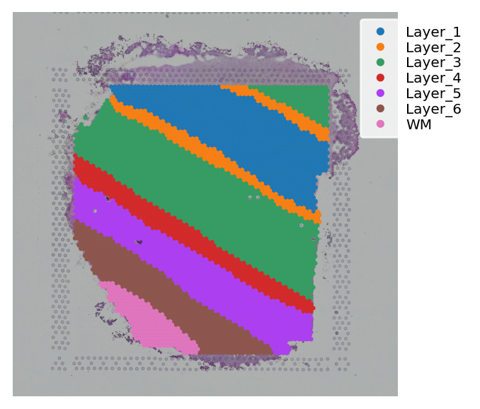
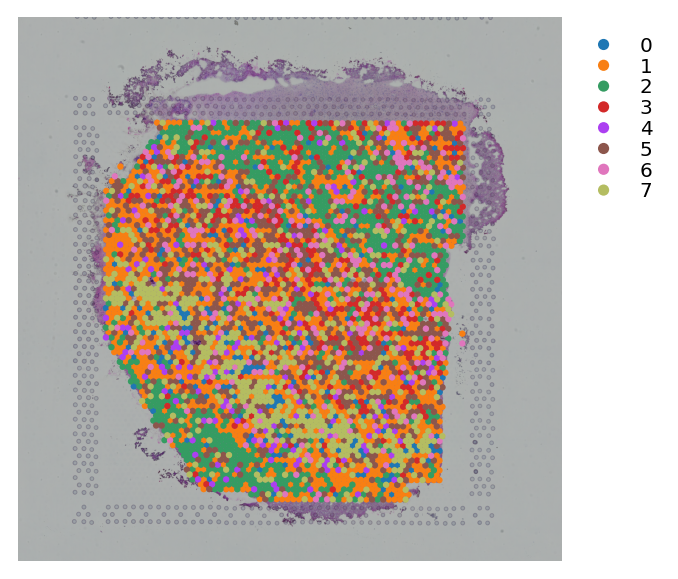
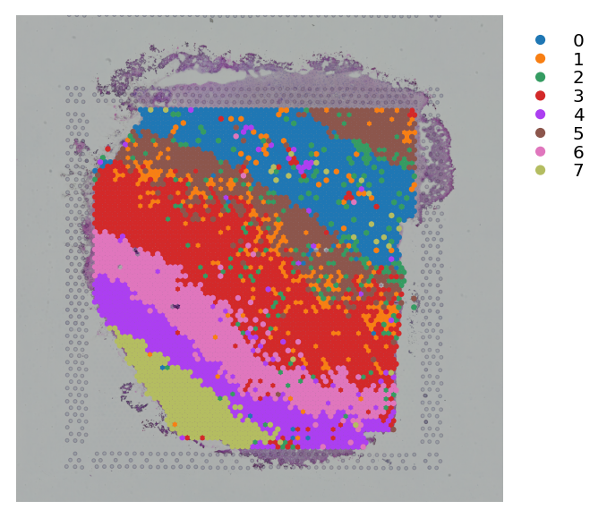
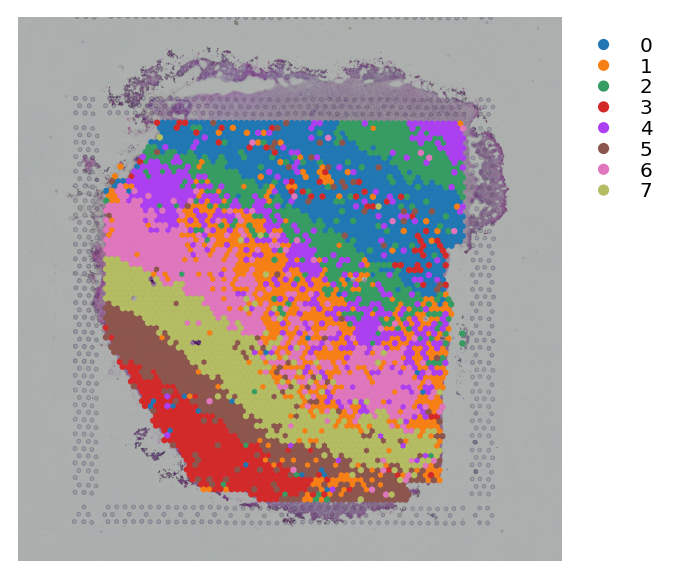
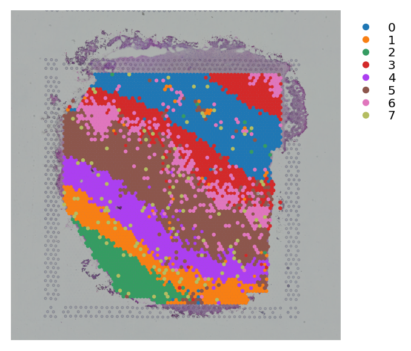
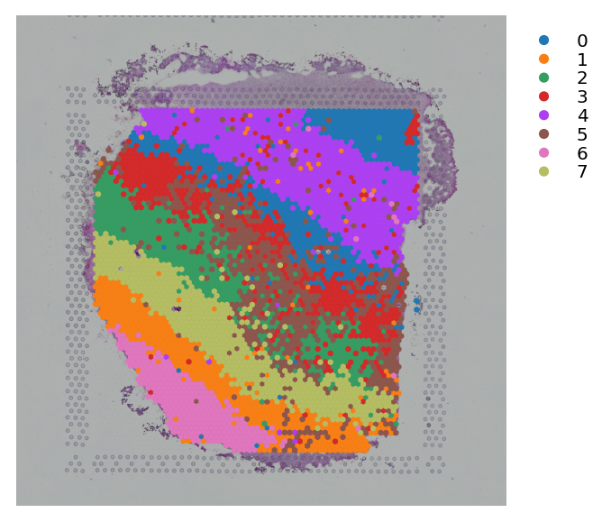

This tutorial compares clustering performance of three scenarios:¶
normal (without stSME)
stSME applied on dimension reduced spaces (PCA) as normalization and
stSME applied on raw gene counts as imputation
We ues Human Brain dorsolateral prefrontal cortex (DLPFC) Visium dataset from here¶
[1]:
# load modules
import pandas as pd
from sklearn.metrics import adjusted_rand_score
from sklearn.preprocessing import LabelEncoder
import numpy as np
import scanpy
from pathlib import Path
import stlearn as st
[2]:
# specify parameters
tile_size = 40
radius = 90.0
rates = 5
# all samples in this dataset
sample_list = ["151507", "151508", "151509",
"151510", "151669", "151670",
"151671", "151672", "151673",
"151674", "151675", "151676"]
[3]:
# specify PATH
i = 1
sample = sample_list[i]
BASE_PATH = Path("/90days/uqxtan9/Human_Brain_spatialLIBD")
MARKER_GENE_PATH = BASE_PATH / "marker_gene.tsv"
SAMPLE_PATH = BASE_PATH / sample
CM_PATH = BASE_PATH / sample / "{}_filtered_feature_bc_matrix.h5".format(sample)
IMG_PATH = BASE_PATH / sample / "{}_tissue_hires_image.png".format(sample)
SPOT_PATH = BASE_PATH / sample / "tissue_positions_list.txt"
SCALE_PATH = BASE_PATH / sample / "scalefactors_json.json"
TILE_PATH = BASE_PATH / "{}_tiles".format(sample)
TILE_PATH.mkdir(parents=True, exist_ok=True)
MARKER_GENE_PATH = BASE_PATH / "marker_gene.tsv"
GROUND_TRUTH_PATH = BASE_PATH / sample / "cluster_labels_{}.csv".format(sample)
[4]:
# load ST data and ground truth label for each spot
ground_truth_df = pd.read_csv(GROUND_TRUTH_PATH, sep=',', index_col=0)
ground_truth_df.index = ground_truth_df.index.map(lambda x: x[7:])
marker_gene_df = pd.read_csv(MARKER_GENE_PATH, sep='\t')
marker_gene = [i.upper() for i in marker_gene_df["symbol"].to_list()]
data = st.Read10X(SAMPLE_PATH)
data = data[:, marker_gene]
ground_truth_df = ground_truth_df.reindex(data.obs_names)
n_cluster = len((set(ground_truth_df["ground_truth"])))
data.obs['ground_truth'] = ground_truth_df["ground_truth"]
[5]:
# ground truth label
st.pl.cluster_plot(data, use_label="ground_truth")

[6]:
# pre-processing for gene count table
st.pp.normalize_total(data)
st.pp.log1p(data)
st.pp.scale(data)
WARNING: Some cells have total count of genes equal to zero
Normalization step is finished in adata.X
Log transformation step is finished in adata.X
Scale step is finished in adata.X
(1) normal (without stSME)¶
[7]:
# run PCA for gene expression data
st.em.run_pca(data, n_comps=50)
PCA is done! Generated in adata.obsm['X_pca'], adata.uns['pca'] and adata.varm['PCs']
[8]:
# K-means clustering on PCA
st.tl.clustering.kmeans(data, n_clusters=n_cluster, use_data="X_pca", key_added="X_pca_kmeans")
st.pl.cluster_plot(data, use_label="X_pca_kmeans")
Applying Kmeans clustering ...
Kmeans clustering is done! The labels are stored in adata.obs["kmeans"]

[9]:
# K-means clustering on UMAP
st.pp.neighbors(data, n_neighbors=15)
st.em.run_umap(data)
st.tl.clustering.kmeans(data, n_clusters=n_cluster, use_data="X_umap", key_added="X_umap_kmeans")
st.pl.cluster_plot(data, use_label="X_umap_kmeans")
Created k-Nearest-Neighbor graph in adata.uns['neighbors']
UMAP is done! Generated in adata.obsm['X_umap'] nad adata.uns['umap']
Applying Kmeans clustering ...
Kmeans clustering is done! The labels are stored in adata.obs["kmeans"]

(2) stSME applied on dimension reduced spaces (PCA) as normalization¶
[10]:
# pre-processing for spot image
st.pp.tiling(data, TILE_PATH, crop_size=tile_size)
# this step uses deep learning model to extract high-level features from tile images
# may need few minutes to be completed
st.pp.extract_feature(data)
# apply stSME to normalise PCA
# radius=90 includes three units of surrounding spots
st.spatial.morphology.adjust(data, use_data="X_pca", radius=radius, method="mean",
similarity_matrix="cosine", rates=rates)
data.obsm['X_pca'] = data.obsm['X_pca_morphology']
The morphology feature is added to adata.obsm['X_morphology']!
The data adjusted by morphology is added to adata.obsm['X_pca_morphology']
[11]:
# K-means clustering on stSME normalised PCA
st.tl.clustering.kmeans(data, n_clusters=n_cluster, use_data="X_pca", key_added="X_pca_kmeans")
st.pl.cluster_plot(data, use_label="X_pca_kmeans")
Applying Kmeans clustering ...
Kmeans clustering is done! The labels are stored in adata.obs["kmeans"]

[12]:
# K-means clustering on stSME normalised UMAP
st.pp.neighbors(data, n_neighbors=15)
st.em.run_umap(data)
st.tl.clustering.kmeans(data, n_clusters=n_cluster, use_data="X_umap", key_added="X_umap_kmeans")
st.pl.cluster_plot(data, use_label="X_umap_kmeans")
Created k-Nearest-Neighbor graph in adata.uns['neighbors']
UMAP is done! Generated in adata.obsm['X_umap'] nad adata.uns['umap']
Applying Kmeans clustering ...
Kmeans clustering is done! The labels are stored in adata.obs["kmeans"]

(3) stSME applied on raw gene counts as imputation¶
[13]:
# apply stSME to raw counts
# radius=90 includes three units of surrounding spots
st.spatial.morphology.adjust(data, use_data="raw", radius=radius, method="mean",
similarity_matrix="cosine", rates=rates)
data.X = data.obsm['raw_morphology']
The data adjusted by morphology is added to adata.obsm['raw_morphology']
[14]:
st.em.run_pca(data, n_comps=50)
PCA is done! Generated in adata.obsm['X_pca'], adata.uns['pca'] and adata.varm['PCs']
[15]:
st.tl.clustering.kmeans(data, n_clusters=n_cluster, use_data="X_pca", key_added="X_pca_kmeans")
st.pl.cluster_plot(data, use_label="X_pca_kmeans")
Applying Kmeans clustering ...
Kmeans clustering is done! The labels are stored in adata.obs["kmeans"]

[16]:
st.pp.neighbors(data, n_neighbors=15)
st.em.run_umap(data)
st.tl.clustering.kmeans(data, n_clusters=n_cluster, use_data="X_umap", key_added="X_umap_kmeans")
st.pl.cluster_plot(data, use_label="X_umap_kmeans")
Created k-Nearest-Neighbor graph in adata.uns['neighbors']
UMAP is done! Generated in adata.obsm['X_umap'] nad adata.uns['umap']
Applying Kmeans clustering ...
Kmeans clustering is done! The labels are stored in adata.obs["kmeans"]

[ ]: